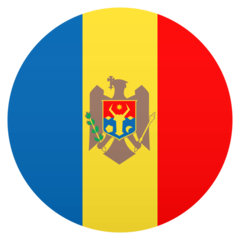
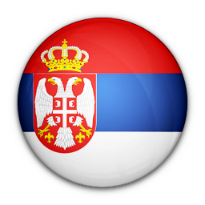
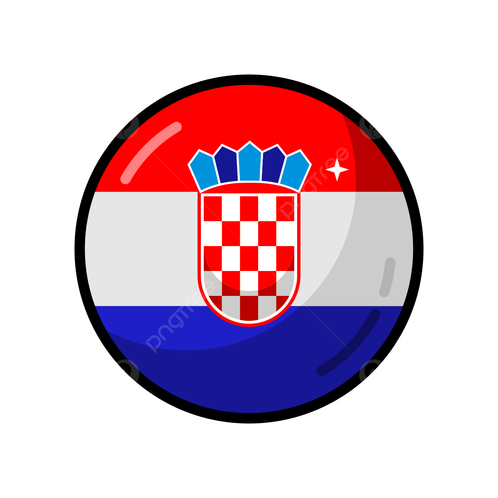
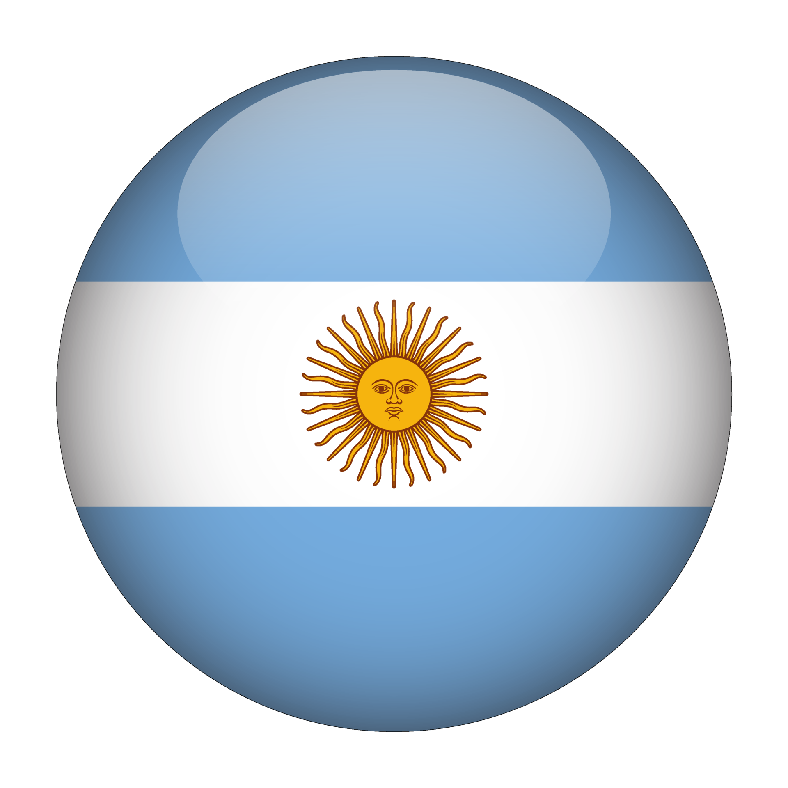
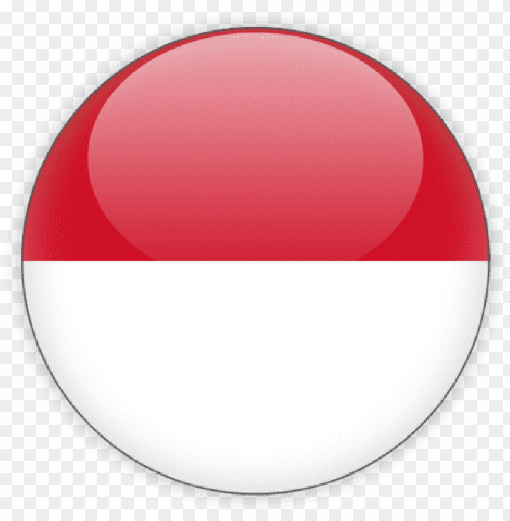

Persib Bandung berhasil menjadi juara Liga 1 2023/2024 setelah menaklukkan Madura United di Stadion Gelora Bangkalan, Jumat (31/5/2024). Persib unggul 3-1 pada leg kedua final Championship Series Liga 1 2023/2024.
Persib begitu perkasa bagi Madura United. Maung Bandung ungggul 3-1 di leg kedua final Chamiponship Series Liga 1. Gol Persib dicetak David da Silva, Klok, dan Beckham Putra. Sementara itu, gol Madura Uniited dicetak Slamet Nurcahyo melalui titik putih.
Persib unggul 6-1 secara agregat. Maung Bandung pun memastikan sebagai kampiun Liga 1 2023/2024.
Baca artikel detikjabar, "Persib Juara Liga 1 2023/2024".
Juara ISL 2014
ditulis oleh Aldi purnama pada 19 januari 2025
Persib Bandung berhasil menjuarai Liga Super Indonesia (ISL) 2014 setelah menang adu penalti 5-3 atas Persipura seusai kedudukan imbang 2-2 bertahan hingga waktu normal 90 menit dan 2x15 menit di Gelora Sriwijaya Jakabaring, Palembang, Jumat.
Pemain belakang Ahmad Jufriyanto menjadi penendang penentu yang memastikan kemenangan Persib dalam adu penalti setelah pemain pengganti Persipura, Nelson Alom, lebih dulu gagal menjadi algojo dengan baik.
Alom menjadi satu-satunya dari sembilan pemain yang mengambil tendangan penalti, yang gagal melakukan tugasnya dengan baik, setelah sebelumnya Konate Makan, Ferdinand Sinaga, Tony Sucitp dan Supardi sukses mengeksekusi untuk Persib sedangkan di kubu Persipura diwakili Boas Solossa, Ferinando Pahabol dan Robertino Pugliara.
Gelar juara itu menjadi pengobat rindu klub berjuluk Pangeran Biru yang terakhir kali menjuarai kasta tertinggi sepak bola Indonesia pada 1995 silam, kala itu mereka menjuarai Divisi Utama Liga Indonesia edisi pertama musim 1994/1995, liga hasil unifikasi kompetisi Perserikatan dan Galatama.
Kedua tim mengakhiri laga dengan sama-sama hanya memainkan 10 pemain lantaran masing-masing menerima satu kartu merah, Bio Paulin di kubu Persipura pada menit kedua waktu tambahan babak pertama dan Vladimir Vudjovic di pihak Persib pada menit 110 atau menit 5 babak kedua perpanjangan waktu.
Jalannya Pertandingan
Persipura mengambil inisiatif serangan lebih awal, dan berbuah manis lewat gol cepat Kabes pada menit 5.
Kabes mencetak gol setelah berhasil lolos dari penjagaan Vudjovic dan menyambut bola umpan terobosan lambung dari Robertino Pugliara, untuk kemudian melepaskan tendangan kaki kiri yang sukses menaklukkan penjaga gawang I Made Wirawan.
Tertinggal satu gol Persib Bandung bukannya tanpa perlawanan, tim asuhan Djadjang Nurdjaman itu beberapa kali menebar ancaman di area berbahaya Persipura, melalui barisan serangan mereka yang dihuni Ferdinand Sinaga, Konate Makan dan Tantan.
Namun barisan pertahanan Persipura masih cukup kuat untuk menahan gempuran Persib hingga menjelang pengujung babak pertama.
Menit 12 Konate Makan berhasil mengirimkan umpan silang yang cukup matang ke dalam kotak penalti Persipura, sayang sundulan Ferdinand Sinaga yang berusaha menyambut datangnya bola tidak menemui bola dengan baik.
Tiga menit berselang giliran Konate Makan yang melepaskan percobaan tembakan dari luar kotak penalti, setelah Tantan gagal mengalahkan pemain belakang lawan dalam skema duel satu lawan satu, namun bola melambung di atas mistar gawang Persipura.
Unggul satu gol, Persipura juga berambisi memperlebar keunggulan, termasuk upaya Pugliara pada menit 19 melepaskan tendangan dari tepi kotak penalti setelah menerima sodoran umpan dari kapten Persipura, Boas Solossa, namun bola masih bisa diantisipasi Made Wirawan dan hanya menghasilkan sepak pojok setelah sempat membentur mistar gawang.
Menit 24, Persipura harus berterima kasih kepada penjaga gawang Dede Sulaiman yang tampil menggantikan penjaga gawang utama Yoo Jae-hoon menyelamatkan bola tendangan Tantan yang menerima bola umpan cutik dari Ferdinand Sinaga.
Sejumlah upaya serangan kembali dibangun kedua pihak hingga pengujung babak pertama, namun tidak ada yang berhasil menjadi gol, termasuk kesempatan Tantan pada menit 44 saat berduel satu lawan satu menghadapi Dede Sulaiman.
Namun, Persipura harus bermain dengan 10 orang saja, saat Bio Paulin menerima kartu kuning kedua dari wasit Prasetyo Hadi setelah mengganjal Ferdinand Sinaga pada menit kedua waktu tambahan babak pertama. Sebelumnya, ia sudah diganjar kartu kuning pada menit 21.
Kesempatan tendangan bebas berhasil dieksekusi dengan baik oleh Firman Utina, namun membentur mistar gawang, bola muntah berusaha disambut dengan tendangan salto oleh Ferdinand Sianaga yang masih menemui tinju Dede Sulaiman, namun bola membentur Imanuel Wanggai dan justru mengarah ke gawang sendiri.
Memasuki babak kedua, Persipura yang mengalami kerugian jumlah pemain akibat kartu merah Bio Paulin tidak terlihat berniat menurunkan intensitas upaya mendominasi penguasaan bola.
Sayang lima menit berjalan, Persib berhasil mencuri bola dan mencetak gol untuk meraih keunggulan 2-1. M. Ridwan mencetak gol dengan tendangan kaki kanannya setelah menyambut umpan terobosan dari Firman.
Akan tetapi, memiliki keunggulan satu gol justru membuat Persib menurunkan tempo permainan mereka. Di lain pihak Persipura, berusaha memperbaiki defisit satu gol dengan terus membangun serangan.
Pelatih Mettu Dwaramurry melakukan taktik pergantian pemain nan efektif, boleh jadi merupakan kunci gol penyama kedudukan mereka.
Pemain pengganti Ferinando Pahabol yang masuk menggantikan Kabes berhasil merangsek ke sisi kiri pertahanan Persib pada menit 80 sebelum menyodorkan bola kepada Pugliara yang diteruskan ke Boas yang berdiri bebas dan dengan mudah menyeploskan bola ke gawang Made Wirawan.
Gol itu sekaligus memaksa Persib terbangun, meski akhirnya mereka tak pelak harus melakoni babak perpanjangan waktu 2x15 menit.
Memasuki babak perpanjangan waktu, Persib memperoleh sejumlah peluang, dua di antaranya di kaki Konate Makan yang terbuang percuma.
Namun petaka juga menghampiri Persib yang harus bermain dengan 10 orang juga ketika Vudjovic diusir lapangan setelah melakukan pelanggaran tidak perlu.
Kedudukan imbang 2-2 bertahan hingga waktu 2x15 menit usai, dan laga dilanjutkan ke adu penalti.kemudian
Drama adu penalti dimulai dengan baik oleh Konate Makan yang menjadi algojo pertama Persib, kemudian setelah kapten Persipura Boas Solossa sukses mengeksekusi tendangan penalti berturut-turut Ferdinand Sinaga, Ferinando Pahabol, Tony Suycipto, Robertino Pugliara dan Supardi Nasir juga melakukan tugas dengan baik.
Petaka menghampiri Nelson Alom, tendangannya ke arah kanan gawang bisa diantisipasi Made Wirawan, sebelum akhirnya Ahmad Jufriyanto memastikan kemenangan Persib.
Persipura: Dede Sulaiman (PG); Dominggus Fakdawer, Bio Paulin, Ruben Sanadi, Gerald Pangkali (Jaelani Arey); Lim Joon-sik, Boas Solossa, Imanuel Wanggai (Nelson Alom), Yustinus Pae; Ian Louis Kabes (Ferinando Pahabol), Robertino Pugliara.
Juara Piala Presiden 2015
ditulis oleh Aldi purnama pada 19 januari 2025
Persib Bandung menjadi juara edisi pertama Piala Presiden setelah menang 2-0 atas Sriwijaya FC di SUGBK yang dipadati oleh 75 ribu penonton, baik pendukung Persib maupun Sriwijaya FC. Achmad Jufriyanto dan Makan Konate menjadi pahlawan kemenangan Maung Bandung lewat gol yang mereka cetak.
Tim asuhan Djadjang Nurdjaman itu memang layak menjadi juara saat itu. Selain karena baru saja menjadi juara Indonesia Super League 2014, Persib memang mengawali turnamen tersebut dengan sangat baik.
Sejarah coach Persib Bandung
| No |
Name |
Form |
Year |
| 1 |
Marek Janota |
 |
1980-1983 |
| 2 |
Marek Andrzej Sledzianowski |
|
2003 |
| 3 |
Juan Paez |
|
2003-2004 |
| 4 |
Arcan Lurie |
 |
2006-2007 |
| 5 |
Daniel Darko |
 |
2010 |
| 6 |
Jovi Cukovic |
|
2010 |
| 7 |
Drago Mamic |
 |
2011 |
| 8 |
Dejan Antonic |
|
2016 |
| 9 |
Mario Gomez |
 |
2018 |
| 10 |
Miljan Radovic |
 |
2019 |
| 11 |
Robert Rene Alberts |
 |
2019-2022 |
| 12 |
Budiman |
 |
2022 |
| 13 |
Luis Milla |
|
2022 |
| 14 |
Yaya Sunarya |
|
2023 |
| 15 |
Bojan Hodak |
|
2023-2025 |
.jpeg)